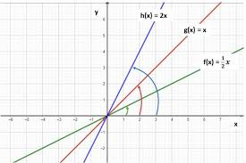

Coeficiente Linear
A função Linear é uma função f : ℝ → ℝ definida como f(x) = a . x, sendo a um número real é diferente de zero. Esta função é um caso particular da função afim f(x) = a.x + b, quando b = 0.
O número a que acompanha o x da função, é chamado de coeficiente. Quando seu valor for igual a 1, a função linear será também chamada de função identidade.
Exemplo: Em uma loja são vendidos relógios, cujo preço de venda é igual a R$40,00. O valor da receita total da venda desses relógios é obtido multiplicando-se o preço de cada unidade pela quantidade vendida. Considerando x a quantidade vendida, determine:
a) uma função que represente a situação descrita.
b) o tipo de função encontrada.
c) o valor da receita quando forem vendidos 350 relógios
Solução:
a) O valor da receita total em função da quantidade vendida pode ser representada por: f(x) = 40.x
b) A função encontrada é uma função do 1º grau, sendo o valor de b = 0. Desta forma, é uma função linear.
c) Para encontrar a receita correspondente à venda de 350 relógios, basta substituir este valor na expressão encontrada. Assim:
- f(x) = 40 . 350 = 14.000
Portanto, ao vender 350 relógios, a receita bruta da loja será igual a R$14.000,00.
Gráfico da função Linear
O gráfico da função linear é uma reta, que passa pela origem, ou seja, pelo ponto (0,0). O coeficiente a da função, corresponde à inclinação desta reta.
Abaixo, representamos a função f(x) = 1/2 x, g(x) = x (função identidade) e h(x) = 2x. Note que quanto maior o valor do a, maior é a inclinação da reta.
